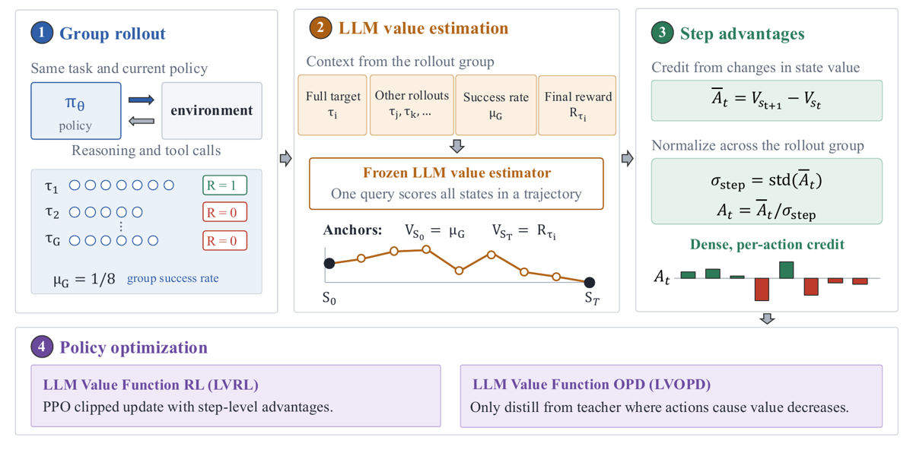
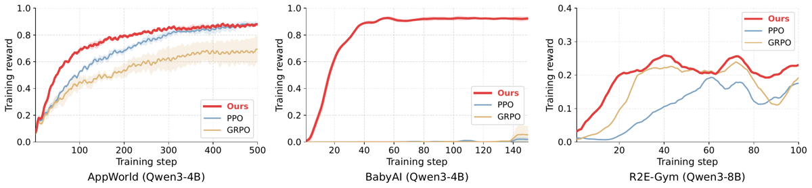
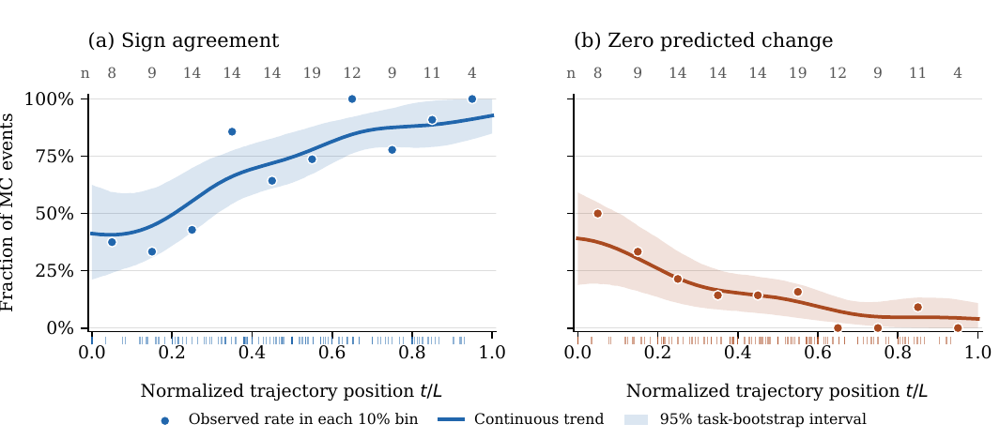

Un LLM frontier gelé (Claude Opus 4.6) lit une trajectoire terminée et prédit la probabilité de succès à chaque état ; les différences consécutives de ces valeurs servent d'advantages par step dans PPO, avec les deux extrémités ancrées sur des quantités empiriques (valeur initiale = taux de succès du groupe μ_G, valeur terminale = reward observé R(τ)), ce qui fait télescoper la somme des advantages vers exactement R(τ) − μ_G [§3.2].
Claim principal, précisément : à même checkpoint initial, même procédure d'échantillonnage de tâches, même budget de rollouts, même nombre d'updates et même configuration de génération que GRPO et PPO [App. B.2], LVRL domine les deux sur 6 cellules env×taille sur 6 (AppWorld 4B/8B, BabyAI 4B/8B, SWE-bench Verified 8B/32B) [Tab. 1] ; et la propriété de télescopage est présentée comme une garantie structurelle anti-hacking : le critic gelé ne peut que redistribuer le reward, jamais en injecter, donc son erreur est « strictly confined to within-trajectory credit assignment and cannot flip the sign of a trajectory's overall advantage » [§3.2].
Pourquoi ce papier compte pour ce corpus : c'est, à ma connaissance de ce dossier, la première comparaison appariée GRPO vs PPO vs méthode proposée sur des environnements agentiques multi-turn, et PPO y est un baseline sérieusement construit (critic décrit, GAE λ=0.95, archi fixée) plutôt qu'un épouvantail.
Origine — trois envs tiers existants, aucune génération de tâches par modèle, aucune annotation humaine. Le seul travail de construction de tâches est la variante BabyAI.
| Env | Train | Eval | Disjonction |
|---|---|---|---|
| AppWorld [App. A.1] | split train : 90 tâches = 30 scénarios × 3 variantes |
test_challenge, 417 tâches |
scénarios de test disjoints de ceux du train |
| BabyAI modifié [App. A.2] | 285 layouts, door distance ∈ {1,2,3} (95 par distance) | 300 ID (distances 1-3), 200 OOD (distances 4-5) | les trois splits utilisent des plages de seeds disjointes et ne partagent aucun layout |
| R2E-Gym [App. A.3] | 3 200 instances exécutables du pool R2E-Gym-Subset | SWE-bench Verified, 500 tâches | les auteurs affirment, en citant jain2025r2e, que les repos de train sont disjoints de ceux de Verified |
Pipeline de construction (BabyAI, le seul env réellement construit) [App. A.2] : grille 19×13 = six pièces 7×7 en 2×3 ; toutes les portes fermées au départ ; inventaire identique dans chaque layout — 18 objets = 3 types (ball, box, key) × 6 couleurs, un de chaque, « so distractor identities carry no information » [Fig. 3 caption] ; instruction pick up the <color> <object>, cible unique. Difficulté contrôlée par door distance = nombre de portes sur le plus court chemin valide vers une case adjacente à la cible, calculé sur la grille complète (murs, objets, connectivité). Distance ≥ 1 toujours : la cible n'est jamais dans la pièce de départ. Le graphe 2×3 complètement connecté a un diamètre de 3 ; comme les layouts générés ne connectent pas toutes les paires adjacentes, certains atteignent 4-5 → c'est exactement ça, le split OOD [App. A.2].
Distribution de difficulté — la seule quantifiée, BabyAI [Tab. 2] : actions optimales médianes 14 / 23-24 / 32 / 40 / 51 et max 34-36 / 46-48 / 51-60 / 62 / 71 pour les distances 1 à 5. Budget d'épisode uniforme à 128 steps, « roughly 1.8× the longest optimal trajectory in the OOD pool » [App. A.2]. Pour AppWorld et R2E-Gym : non précisé (pas de stratification de difficulté au train ; l'analyse MC mentionne a posteriori des buckets Easy/Medium/Hard, n = 25/70/19 [App. E.3], sans dire d'où vient l'étiquette — probablement l'annotation native AppWorld, non explicité).
Filtrage — aucun. Pas de filtrage par pass@k du modèle de base, pas de seuil, pas de rejet de tâches. ⚠️ C'est notable : sur AppWorld et BabyAI les modèles de base sont à 4,2 % / 10,9 % et 0,0 % / 0,7 % [Tab. 1], donc l'essentiel des groupes est all-zero au début — et c'est précisément le régime que la méthode revendique de sauver, donc filtrer aurait détruit le claim.
Curriculum — aucun. Pas d'ordre, pas de rééchantillonnage, pas de mélange adaptatif. Les 64 trajectoires par update sont organisées en 8 groupes de G=8 sur la même tâche et le même état initial [App. B.2].
Données SFT/IFT avant RL — aucune. RL directement depuis les checkpoints Qwen3 publiés, tous paramètres entraînés, non-thinking mode au train comme à l'éval « to isolate the effect of RL optimization » [§4.1].
Contamination — traitée uniquement par la disjonction des splits (ci-dessus). ⚠️ Non précisé : contamination de SWE-bench Verified et d'AppWorld dans le pré-entraînement de Qwen3. Atténuation : elle frappe identiquement les trois bras, donc elle ne menace pas la comparaison relative, seulement les niveaux absolus.
Coût humain — nul côté données. Aucune annotation, aucun expert, aucune heure. Le coût est déplacé vers l'API : 92 718 + 99 968 + 8 838 + 8 030 ≈ 209 554 requêtes de value estimation loggées [Tab. 6], à 0,061–0,140 $ pièce, plus un coût de summarization « similar to that of value estimation » [App. B.1]. Ordre de grandeur que je dérive de Tab. 6 (⚠️ mon calcul, pas celui des auteurs) : ≈ 12,3 k$ de value estimation sur l'ensemble des runs loggés, à doubler pour les summaries, hors caching et batch discounts que les auteurs disent explicitement ne pas appliquer.
Section inhabituellement bien documentée pour un papier d'algo — App. A décrit les trois harnesses au niveau du parseur et du timeout.
Execution successful., ou la traceback Python. 9 applications (amazon, file_system, gmail, phone, simple_note, splitwise, spotify, todoist, venmo) + 2 méta-apps : api_docs (découverte/spécifications) et supervisor (profil, credentials, complete_task).api_docs, une démonstration de 14 tours sur une tâche Spotify, et 8 consignes (fermer chaque bloc, réutiliser les variables, inspecter la spec avant d'appeler, un petit bloc par tour, paginer via page_index, appeler complete_task à la fin). Prompt identique train et éval.apis.supervisor.complete_task() ou épuisement du budget de tours. Train : budget de rollout de 50 steps [Tab. 5, config LVOPD] ; éval : turn cap 70, context cap 40k tokens, « both budgets are held identical across all compared methods » [App. A.1]. ⚠️ Les budgets de train LVRL (par opposition à LVOPD) ne sont pas tabulés séparément — je les suppose identiques, le papier ne le dit pas.NameError successifs sans redémarrer, grâce à l'état persistant.<action> : left, right, forward, pick, drop, toggle.<action> tag is executed as a no-op. It still consumes one step of the budget and is recorded in the dialogue history with an explicit "no valid action found" message. » → le contrôle d'infra du CLAUDE.md est satisfait et documenté : l'action non parsée est comptée, visible, et non silencieuse.drop avant de ré-essayer./testbed, dépendances pré-installées. Sortie d'outil renvoyée comme message user suivant.search (grep sur fichier ou dossier) · file_editor (view avec numéros de ligne ou squelette condensé ; create, str_replace, insert, undo_edit) · execute_bash · finish.<tool_call> enveloppant un JSON {nom, arguments} ; schémas injectés une fois dans le system message via le chat template.finish.Pour chaque trajectoire cible τ_i : une seule requête au LLM gelé renvoie toutes les valeurs des états 0..T en un JSON [App. C]. Entrée = tâche + outcome final révélé + séquence action/réponse complète + fewshot_section. Les réponses d'env longues sont tronquées à 4 000 caractères avec un marqueur, mais « all steps are retained ». Les summaries de peers sont cachées dans le batch de rollout et réutilisées quand le même rollout sert de contexte à plusieurs cibles. La trajectoire cible elle-même n'est jamais résumée.
287e338_1)Task: Name the artist most recommended to me on Spotify.
[agent] print(apis.api_docs.show_api_descriptions(app_name='spotify'))
[env] Output: [... "show_recommendations : Get personalized song recommendations ..." ...]
[agent] page_index = 0; songs = []
while page_index < 10:
song_page = apis.spotify.show_recommendations(access_token=spotify_access_token, ...)
[env] Execution failed. Traceback: NameError: name 'spotify_access_token' is not defined
[agent] spotify_password = [p for p in passwords if p["account_name"] == "spotify"][0]["password"]
[env] Execution failed. Traceback: NameError: name 'passwords' is not defined
[agent] passwords = apis.supervisor.show_account_passwords()
[env] Execution successful.
[ ... ]
[agent] apis.supervisor.complete_task(answer=most_recommended_artist)
[env] Execution successful. -> validation suite passes, r = 1
Deux objets distincts, et c'est le cœur du design : le reward est exécutionnel, le critic n'est pas un reward.
complete_task ou à l'épuisement du budget, AppWorld lance sa propre suite de validation contre l'état de la base ; r=1 ssi la suite passe en entier. « There is no intermediate shaping and no partial credit: the fraction of validation tests passed is logged for analysis but never enters the reward. » → règle d'agrégation = conjonction stricte, pas de somme pondérée. Et clause explicite : « Calling complete_task is not sufficient for success: an episode that declares completion while the validation suite fails receives zero reward, and this is by far the most common failure mode we observe. »r=1 au step où l'objet cible est ramassé, 0 partout ailleurs.finish ou épuisement du budget, la harness lance les tests fail-to-pass et pass-to-pass held-out (timeout 500 s) ; r=1 ssi toute la suite passe. Les tests « are used only for reward and are never visible to the policy ».Mécanique [§3.2] : V_llm(s_{i,0}) = μ_G et V_llm(s_{i,T_i}) = R(τ_i) ancrés après prédiction ; Ā_{i,t} = V_llm(s_{t+1}) − V_llm(s_t) ; normalisation par σ_step = l'écart-type des Ā sur tous les steps valides de tout le groupe. Tous les tokens d'une action héritent du même A_{i,t}, tandis que le ratio de vraisemblance et le clipping sont évalués par token. Avec γ=1 et reward intermédiaire nul, c'est mathématiquement GAE à λ=0, mais les auteurs précisent eux-mêmes que V_φ est conditionné sur la trajectoire terminée et son outcome : « it is a hindsight estimate rather than a true state-value function ».
L'argument anti-hacking, cité [§3.2] : « Because the per-step advantages obtained by LVRL sum to the empirical outcome advantage, the frozen critic cannot inject new reward; it only redistributes it. Estimator error is strictly confined to within-trajectory credit assignment and cannot flip the sign of a trajectory's overall advantage. » Opposé explicitement aux PRM, qui « inject learned additive reward into the RL objective, allowing the policy to exploit estimation errors […] to accumulate a positive total reward on a trajectory that fails ».
⚠️ Mon évaluation : l'argument est correct au niveau de la somme et c'est une vraie propriété structurelle — mais il ne couvre pas le hacking intra-trajectoire. Rien n'empêche la politique d'apprendre des trajectoires dont la forme capte du crédit interne favorable : allonger la trajectoire pour diluer les steps négatifs, insérer des actions « lisibles comme du progrès » (lire une doc, logger, re-vérifier) que le critic récompense — les auteurs documentent eux-mêmes que le critic lit ces préparatifs comme du progrès alors que la valeur MC descend (12 désaccords précoces sur 19, §4.4). Aucune courbe de longueur ni d'entropie n'est rapportée, donc ce mode-là est invérifiable depuis le papier.
Prompt de value prediction [Fig. 10] :
You are an expert at analyzing AI agent trajectories. An AI agent is attempting to solve a
task. The agent **{outcome}** this task (final reward = {final_reward}).
## Task
{task_description}
{fewshot_section}
## Full Trajectory to Analyze (Steps 1-{total_steps})
{formatted_steps}
## Instructions
For each point in the trajectory (step 0 = before any action, step 1 = after the first
action, ..., step {total_steps} = after the last action), estimate the probability
(0.0 to 1.0) that the agent will successfully complete the task from that point
onward. Consider:
- Whether the agent's approach is correct up to that step
- Whether any errors have been made that are hard to recover from
- How much progress has been made toward the goal
- How many steps remain
Respond with ONLY a JSON object in this exact format (no other text):
{
"values": [
{"step": 0, "value": <float>, "reasoning": "<brief explanation>"},
...
]
}
fewshot_section — c'est là qu'est la policy-awareness [Fig. 11] :
## Current Policy's Performance on This Task
Group success rate: {n_success}/{group_size} rollouts succeeded. The trajectory below
is one of the {n_same_outcome} that {outcome}.
## Other Rollouts by the Current Policy on This Task
These are rollouts from the SAME task by the SAME current policy. Use them to
calibrate what 'good' and 'bad' look like FOR THIS POLICY. Identify where the target
trajectory diverges from the successful ones, and which steps match the failed ones.
### Rollout {j} — {SUCCESS_or_FAIL} (reward={reward_j}, {steps_j} steps)
{summary_j}
Prompt de summarization [Fig. 9] — condense un rollout peer en une ligne par step : « For each step keep: what the agent attempted (which app/API or action) and the KEY result — whether it succeeded or failed, any error type (e.g. 401 unauthorized, no-such-API, wrong parameter), and any important state change […] DROP boilerplate, long JSON dumps, API-doc listings, and verbose reasoning. »
⚠️ Les auteurs notent que « the same prompts are shared across environments and therefore retain some AppWorld-specific wording (e.g., references to apps and APIs) » — donc BabyAI et R2E-Gym sont scorés par un prompt qui parle d'apps et d'API. Aucune ablation de ce point.
Non. Aucun test adversarial, aucun mutant, aucune politique entraînée à exploiter le critic. L'argument est analytique (télescopage), pas empirique. Le seul contrôle négatif est le baseline error-marker (§4.4, ci-dessous), qui teste la valeur ajoutée du critic, pas sa résistance.
Algorithme : PPO clippé standard [Éq. 1], dans lequel Â_t est remplacé par A_{i,t} = la différence de valeurs normalisée par groupe. Donc LVRL = PPO sans critic appris, GRPO = même chose avec un advantage uniforme par trajectoire. La différence entre les trois bras est exactement et seulement le calcul de l'advantage — c'est ce qui rend la comparaison lisible.
Hyperparamètres
| Paramètre | Valeur | Source |
|---|---|---|
| Group size G | 8 | §4.1, App. B.2 |
| Contextes in-context k | 3 | §4.1 |
| γ | 1.0 | §3.1, §3.2 |
| GAE λ (PPO baseline seulement) | 0.95 | App. B.2 |
| Envs parallèles (AppWorld, BabyAI) | 64 sur 8 GPU, 8 par GPU → 8 groupes de 8 par update | App. B.2 |
| Updates | AppWorld 500, BabyAI 150, R2E-Gym 100 — identiques pour GRPO, PPO et LVRL | App. B.2 |
| Normalisation de l'advantage | division par σ_step, écart-type sur tout le groupe, tous steps confondus (pas par trajectoire) |
§3.2 |
| Critic PPO baseline | DeepCriticHead, MLP 4 couches, largeur 2 048, bf16, backbone LM partagé, entraîné conjointement dans le même backward, value loss = MSE clippée, coef. 0.5 |
App. B.2 |
| Seeds | 3 (AppWorld, BabyAI) ; 1 (R2E-Gym, « due to the higher computational cost ») | §4.1 |
| Sélection de checkpoint | dernier checkpoint, pas de sélection sur validation | App. B.2 |
⚠️ Trou net : pour LVRL, le papier ne donne ni learning rate, ni ε de clipping, ni coefficient KL, ni référence KL, ni température de sampling au train, ni batch d'optimisation, ni température du critic. Ces valeurs n'apparaissent que dans l'appendice LVOPD [App. B.3] — LR constant 1e-5, clipping 0.2, cap TIS 2.0, grad-norm max 1.0, coefficient d'entropie 0, 1 époque par batch, batch effectif 256, température étudiant 1.0 / top-p 1.0, FSDP FULL_SHARD + gradient checkpointing, sampler vLLM synchrone séparé. Rien ne dit que LVRL partage ces réglages. Non précisé — c'est la principale lacune de reproductibilité du papier, au-delà de l'absence de code.
Pas de terme KL explicite mentionné nulle part dans l'objectif LVRL/LVOPD : L_LVOPD = L_LVRL + β·L_VD avec β=1.0, et L_LVRL est le surrogate clippé. Donc pas de régularisation KL vers une référence — la contrainte est le clipping (+ TIS en LVOPD).
Stabilité — aucune instabilité rapportée, aucune astuce listée comme « essayée puis abandonnée ». Deux échecs de baselines sont diagnostiqués [§4.2] : sur BabyAI, « GRPO advantages vanish without reward variance, and PPO's learned critic collapses to predicting zero everywhere ». ⚠️ Ce diagnostic du collapse du critic PPO est affirmé, non montré : aucune courbe de valeur prédite, aucune value loss, aucun graphe d'explained variance.
Compute — 8 GPU pour AppWorld/BabyAI (type non précisé), 1 nœud / world size 8 pour AppWorld et 2 nœuds / world size 16 pour BabyAI en LVOPD [Tab. 5]. Aucune GPU-heure, aucune durée wall-clock, aucun coût par step. Seul le coût API est chiffré [Tab. 6].
Dynamique [Fig. 12, §D] : reward d'entraînement seulement. AppWorld 4B — LVRL prend une avance nette dès ~step 30 et plafonne vers 0,88 ; PPO rejoint ~0,88 au step 500 ; GRPO plafonne vers 0,68 avec une variance inter-seeds large. BabyAI 4B — LVRL monte de 0 à ~0,90 entre les steps 10 et 50 puis reste plat ; GRPO et PPO restent collés à 0 sur 150 steps. R2E-Gym 8B — courbes bruitées et entrelacées : LVRL ~0,23 et GRPO ~0,19 au step 100, avec GRPO qui remonte en fin de courbe. Aucune courbe de longueur de réponse, aucune courbe d'entropie, aucune courbe de valeur prédite.
⚠️ Observation que je tire de la confrontation Fig. 12 ↔ Tab. 1, et qui n'est pas commentée par les auteurs : sur AppWorld 4B, LVRL et PPO finissent au même reward d'entraînement (~0,88) mais à 24,3 % vs 14,8 % en held-out. Le gain de LVRL sur AppWorld est donc, en fin d'entraînement, un gain de généralisation, pas d'optimisation. Et les trois bras surajustent massivement 90 tâches de train (0,88 de reward de train → 24,3 % sur test_challenge).
Aucun cas de reward hacking rapporté. Les auteurs n'en revendiquent aucun et n'en cherchent aucun. ⚠️ Mon évaluation sur la crédibilité : plausible pour le hacking du reward, invérifiable pour le hacking du critic. Le reward est exécutionnel et conjonctif (suite de validation complète, suite fail-to-pass + pass-to-pass complète) et n'a aucun terme de format ni de longueur — il y a très peu de surface d'attaque. En revanche l'advantage intra-trajectoire est entièrement façonné par un LLM dont les auteurs montrent eux-mêmes le biais systématique (lire les préparatifs comme du progrès) ; sans courbe de longueur ni d'entropie, la dérive correspondante serait invisible.
Modes d'échec documentés (tous côté environnement ou côté critic, aucun côté exploitation) :
complete_task alors que la suite échoue. Détection : la suite de validation d'AppWorld. Les auteurs : « by far the most common failure mode we observe » [App. A.1]. Correction : aucune — c'est le reward qui le sanctionne à 0, par construction. Correction évaluée : sans objet.μ_G = 0 et R = 0 (donc somme des advantages nulle), les estimations intérieures varient et produisent des steps positifs et négatifs. Correction évaluée : oui, 75,0 % ID / 65,5 % OOD [Tab. 1]. ⚠️ Mais c'est aussi le régime où la garantie anti-hacking est vide : quand tout le groupe échoue, le télescopage vers zéro ne contraint plus rien, et 100 % du signal d'apprentissage vient du critic seul. Les 75 % de BabyAI sont donc obtenus par du pur shaping non vérifié — et la validation MC n'a été faite que sur AppWorld.release_date vs added_at) ; aucune erreur d'exécution ; MC chute de 0,84 à 0,34 ; le critic prédit +0,05, puis « no change » au step suivant quand le KeyError tombe effectivement. Détection : la sonde Monte-Carlo. Diagnostic des auteurs : « the immediate result of an action is verified while its support for later computation is not ». Correction : aucune proposée.Comportements émergents — un positif, documenté qualitativement [App. F] : le critic place correctement la chute de valeur sur l'erreur sémantique plutôt que sur l'erreur d'exécution. Exemple le plus net [App. F.1] : tâche « move my go-to-sleep alarm 1 hour later and disable the rest » ; l'agent appelle delete_alarm au lieu de update_alarm(enabled=False) ; six accusés de réception « Alarm deleted successfully », aucune erreur ; le critic fait passer la valeur de 0,90 à 0,00 au step 7, en écrivant « Critical error: The agent DELETED all other alarms instead of DISABLING them ». Et [App. F.3] sur R2E-Gym, dans une trajectoire qui réussit (R=1), le critic donne −0,35 à un str_replace qui met box = (0,0,0,0) (région de collage d'aire nulle, édition pourtant acceptée) puis +0,35 à sa correction box = (0,0,im.size[0],im.size[1]) — c'est exactement le crédit que GRPO ne peut pas donner.
cl100k_base, que les auteurs qualifient eux-mêmes d'« uncalibrated proxy for Claude tokenization » parce que l'usage API réel n'a pas été conservé. À doubler : le coût de summarization est « similar », et les estimations « exclude separate trajectory-summarization calls and do not apply caching or batch discounts ».| Chiffre annoncé | Où | Source dans le papier | Verdict |
|---|---|---|---|
| « absolute improvements of up to 13.6 […] percentage points over GRPO » (AppWorld) | abstract | Tab. 1 : LVRL 24,3 − GRPO 10,7 = 13,6, sur Qwen3-4B | confirmé (« up to » honnête ; sur 8B l'écart n'est que de 6,5) |
| « […] and 8.6 percentage points over GRPO » (SWE-bench Verified) | abstract | Tab. 1 : 30,9 − 22,3 = 8,6, sur Qwen3-32B | confirmé (sur 8B l'écart est de 8,2) |
| « Qwen3-8B […] 26.3 % AppWorld, 20.2 % SWE-bench vs 19.8 % et 12.0 % pour GRPO » | intro | Tab. 1 | confirmé, à l'unité près |
| « on BabyAI, LVRL bridges the gap from total failure to 75.0 % success » | abstract | Tab. 1 : 75,0 ± 2,0 = ID, Qwen3-8B. OOD 8B = 65,5 ; 4B = 69,0 ID / 52,2 OOD | sur-généralisé : vrai pour le meilleur réglage (8B, in-distribution) ; l'abstract ne qualifie ni la taille ni le split, et l'intro, elle, donne bien 65,5 % OOD |
| « across policy scales (4B to 32B), LVRL consistently and substantially outperforms both GRPO and PPO » | abstract | Tab. 1 : LVRL meilleur dans 6 cellules sur 6, écarts de +6,0 à +74,3 pp | confirmé |
| « LVOPD yields consistent improvements over standard distillation baselines on AppWorld » | abstract | Tab. 3 : 4B 20,2 ± 1,8 vs OPD 17,0 ± 0,3 et traj-gated 19,2 ± 1,0 ; 8B 23,3 ± 1,6 vs 22,2 ± 0,7 et 21,2 ± 1,0 | sur-généralisé : le sens est bon dans les 4 comparaisons, mais 3 des 4 écarts (+1,0 / +1,1 / +2,1 pp) sont inférieurs à l'écart-type de LVOPD lui-même, et la « progression en granularité » annoncée en §4.3 est contredite à 8B (traj-gated 21,2 sous pure OPD 22,2) |
| « improving pure OPD by 3.2 percentage points » (Qwen3-4B) | intro | Tab. 3 : 20,2 − 17,0 = 3,2 | confirmé |
| « predicted value changes correctly identify 72 % of critical pitfalls and 66 % of recoveries » | intro / abstract | §4.4 : accord de signe 72 % sur 76 pitfalls, 66 % sur 38 recoveries ; agrégat Tab. 9 = 70,2 % (80/114), cohérent avec 0,72·76 + 0,66·38 ≈ 80 | confirmé |
| « Monte-Carlo analysis confirms that our frozen critic accurately identifies semantic pitfalls and recoveries » | abstract | §4.4 + App. E, sur AppWorld uniquement, un seul run d'entraînement, 114 événements | sur-généralisé : établi sur un env sur trois ; rien de comparable sur BabyAI ni R2E-Gym, où les exemples sont purement qualitatifs et sans labels MC (dit explicitement en App. F) |
Verdict 7.0 : aucun chiffre introuvable, aucun contredit sur LVRL. Deux sur-généralisations d'abstract (BabyAI 75,0 sans qualificatif ; portée de la validation MC) et une formulation de LVOPD plus forte que les écarts-types ne le soutiennent.
| Env | Modèle | Base | GRPO | PPO | LVRL | Δ vs meilleur baseline |
|---|---|---|---|---|---|---|
| AppWorld | Qwen3-4B | 4,2 ± 0,4 | 10,7 ± 2,8 | 14,8 ± 0,8 | 24,3 ± 1,7 | +9,5 (vs PPO) |
| AppWorld | Qwen3-8B | 10,9 ± 1,0 | 19,8 ± 3,8 | 17,5 ± 1,6 | 26,3 ± 0,5 | +6,5 (vs GRPO) |
| BabyAI ID/OOD | Qwen3-4B | 0,0 / 0,0 | 0,3 / 0,0 | 0,1 / 0,0 | 69,0 / 52,2 | +68,7 / +52,2 |
| BabyAI ID/OOD | Qwen3-8B | 0,7 / 0,0 | 2,7 / 0,0 | 0,3 / 0,0 | 75,0 / 65,5 | +72,3 / +65,5 |
| SWE-bench Verified | Qwen3-8B | 2,9 ± 0,2 | 12,0 ± 1,2 | 9,0 ± 0,4 | 20,2 ± 1,3 | +8,2 (vs GRPO) |
| SWE-bench Verified | Qwen3-32B | 20,2 ± 1,2 | 22,3 ± 2,1 | 24,9 ± 0,5 | 30,9 ± 1,6 | +6,0 (vs PPO) |
Observation sur PPO, qui est le point d'intérêt n° 1 de ce corpus : PPO n'est pas uniformément plus faible que GRPO. Il le bat sur AppWorld 4B (14,8 vs 10,7) et sur SWE-bench 32B (24,9 vs 22,3), et perd sur AppWorld 8B et SWE-bench 8B. Sur BabyAI les deux sont à zéro. Autrement dit : la monoculture GRPO du corpus n'est pas justifiée par ce papier — à budget strictement apparié, l'ordre GRPO/PPO dépend de l'env et de la taille, et l'écart entre les deux (≤ 4,1 pp dans les deux sens) est systématiquement plus petit que l'écart de LVRL à chacun des deux.
Le seul split OOD propre est BabyAI, et il est bien construit : distances de portes 4-5 jamais vues, grille, inventaire, format d'instruction, interface d'observation et espace d'actions identiques [App. A.2] — c'est donc un OOD d'horizon, pas de format. LVRL perd 16,8 pp (4B : 69,0 → 52,2) et 9,5 pp (8B : 75,0 → 65,5) en passant ID → OOD ; les baselines sont à 0,0 des deux côtés, donc l'écart OOD est informatif uniquement pour LVRL. SWE-bench Verified est un transfert vers des repos jamais vus (les auteurs l'annoncent comme tel, en citant jain2025r2e) : c'est de l'OOD de codebase, pas de tâche.
Non mesuré. Aucune expérience « entraîner sur A, évaluer sur B ». Trois runs indépendants, trois envs, aucun cross-env. La conclusion signale d'ailleurs que l'extension hors agentique (maths) reste ouverte.
| Ablation | Résultat | Ce qu'elle isole |
|---|---|---|
| Calibration in-context [Tab. 3b] | AppWorld 8B : 26,3 ± 0,5 → 22,1 ± 0,5 sans calibration (vs GRPO 19,8) | ⚠️ Ablation groupée : les auteurs retirent ensemble les ancres d'extrémités, μ_G, et les k summaries de peers. Ils le reconnaissent : séparer l'effet des ancres de celui des peers « is left to future work ». Donc le papier ne dit pas lequel des deux porte les 4,2 pp — or c'est précisément l'ingrédient dont dépend la garantie de télescopage |
| Choix du critic [Tab. 3c] | AppWorld 4B, 3 seeds par critic : Opus 4.6 24,3 ± 1,7 · GLM-5.2 22,3 ± 4,1 · Qwen3-235B 9,8 ± 2,3 (base 4,2) | Isole proprement la dépendance au critic, et montre que deux familles frontier distinctes marchent → pas un artefact Anthropic. ⚠️ Mais 9,8 avec Qwen3-235B est sous le PPO apparié (14,8) : avec un critic open-weights, la méthode est battue par PPO sur cet env |
| Trajectory-gated OPD [Tab. 3a] | 4B 19,2 vs LVOPD 20,2 ; 8B 21,2 vs 23,3 | Bon design : remplace les deux composants par leur contrepartie trajectory-level, donc isole la granularité et rien d'autre. Écarts faibles (voir 7.0) |
| Baseline error-marker [§4.4] | Règle textuelle (Traceback, Execution failed, No code available to execute) : détecte 13 % des pitfalls MC et flagge 3 % des neutres, contre 72 % / 8 % pour le critic |
L'ablation la plus importante du papier : elle montre que le signal n'est pas réductible aux erreurs d'exécution explicites |
C'est la partie la mieux faite du papier, et elle coche des cases que le corpus réclame habituellement en vain.
Protocole [§4.4, App. E.1] : 3 checkpoints d'un seul run AppWorld (≈ 25 %, 50 %, 75 % de l'entraînement) ; 30 tâches tirées au hasard par checkpoint ; une trajectoire réussie et une échouée par tâche → 180 trajectoires, 3 899 états. Pour chaque état, M = 32 continuations indépendantes échantillonnées depuis le même checkpoint ; V^MC(s_t) = fraction de succès ; Δ^MC_t = V^MC(s_{t+1}) − V^MC(s_t).
Reconstruction d'état [App. E.1] — soigneuse, et c'est non trivial : « AppWorld is stateful: the environment holds both a relational database and the live REPL namespace, and neither can be restored by prompting alone. » Ils remettent l'env à l'état initial et ré-exécutent chaque cellule de code du préfixe dans l'ordre, puis vérifient que le replay reproduit les réponses d'env enregistrées ; « transitions where replay diverged were dropped before labeling ».
Plafond de bruit — présent et dérivé, pas invoqué [App. E.2] : V^MC est une proportion binomiale sur M=32, écart-type ≤ √(0,25/32), maximal en 0,5 ; les deux estimations étant indépendantes, l'écart-type de leur différence est borné par σ = √(0,5/32) = 0,125. Événement ssi |Δ^MC| ≥ 3σ (= 12/32). Tab. 8 donne la probabilité de queue bilatérale sous le pire null (p=0,5) et le nombre attendu de faux événements sur tout le jeu : 1σ → 0,3820 → 664 faux · 2σ → 0,0599 → 72 · 3σ → 0,0037 → 3,4. À 3σ, 3,4 faux attendus contre 114 événements observés. → Le plafond de bruit est calculé, pas postulé, et le seuil est justifié par lui.
Résultat : 76 pitfalls, 38 recoveries, 1 533 transitions MC-neutres (|Δ^MC| < σ, « indistinguishable from sampling noise »). Accord de signe : 72 % des pitfalls, 66 % des recoveries. Sur les neutres, le critic descend sur 8 % et monte sur 22 %. → FP et FN sont bien séparés, avec des dénominateurs distincts (76 / 38 / 1 533), ce que le corpus réclame.
Contrôle d'artefact d'ancrage [App. E.3] : « Because the terminal value is anchored to the observed reward, a final transition could agree with the Monte-Carlo change by construction. However, none of the 114 selected events is a final transition, so this anchoring does not affect the reported agreement of 70.2 % (80/114). » → le biais le plus évident de la construction est explicitement écarté, par vérification.
⚠️ Ce que la validation n'établit pas, et que je dérive de leurs propres nombres : ils rapportent du rappel sur les événements et un taux de flag sur les neutres, jamais une précision. En combinant : ≈ 0,72 × 76 ≈ 55 vrais pitfalls détectés contre ≈ 0,08 × 1 533 ≈ 123 neutres flaggés à la baisse → parmi les « pitfalls prédits » de cet échantillon, de l'ordre de 30 % sont de vrais événements à 3σ. Pour les recoveries : ≈ 25 vs ≈ 337 → de l'ordre de 7 %. Caveat de mon calcul : les 2 252 transitions de la bande grise (σ ≤ |Δ^MC| < 3σ) sont exclues des deux dénominateurs, donc ces précisions ne portent que sur un sous-ensemble et sont indicatives. Elles ne cassent pas le claim — qui est un claim de direction du signal, et le critic prédit « aucun changement » sur la majorité des neutres — mais elles disent que le signal par step est bruité en valeur absolue, ce qui est cohérent avec le fait que la méthode marche surtout comme une redistribution grossière.
Stratifications [App. E.3, Fig. 13] : accord 44 % / 78 % / 88 % par tiers de trajectoire (n = 34 / 54 / 26) ; prédictions « zéro » 29 % / 13 % / 4 % ; signe opposé 26 % / 9 % / 8 %. La Fig. 13 donne des intervalles bootstrap 95 % par tâche sur 10 bins (n = 4 à 19 par bin — petit). Magnitude prédite médiane ×4 du premier au dernier tiers (0,025 → 0,100). Les auteurs écartent la difficulté comme explication : taux de signe opposé 12 % / 16 % / 11 % sur Easy/Medium/Hard (n = 25/70/19), 13 % vs 16 % selon la longueur de la solution de référence. Et ils bornent eux-mêmes la conclusion : « Trajectory position is only a coarse proxy for how far an action is from its observable consequences. The results are consistent with long-range attribution being more difficult, but do not establish it as the cause. »
Diagnostic du biais résiduel [§4.4] : sur 19 désaccords précoces, 12 sont des actions préparatoires utiles (consulter la doc d'API, se logger, récupérer les données) que le critic lit comme du progrès alors que la valeur MC baisse → « the frozen LLM critic's value estimates are not strictly on-policy. While it correctly identifies useful semantic progress, it overestimates the current student's ability to successfully complete the task. » C'est l'aveu central du papier, et il est précis.
evidence = 5/6, manquant : repro.
Solide sur LVRL, fragile sur LVOPD, et avec un contrôle manquant qui empêche de trancher l'interprétation.
Ce qui tient : à budget de rollouts strictement apparié, remplacer l'advantage uniforme de GRPO par des différences de valeurs d'un LLM gelé bat GRPO et PPO dans 6 cellules sur 6, avec 3 seeds sur deux envs sur trois ; le résultat BabyAI (0 → 75 %) est trop grand pour être du bruit ; et la validation Monte-Carlo est faite avec un plafond de bruit dérivé, une reconstruction d'état vérifiée, un contrôle d'artefact d'ancrage et un baseline textuel négatif — un niveau de rigueur de validation de process rare dans ce corpus.
Ce qui ne tient pas, ou pas encore : (i) il n'y a aucun contrôle de densité — on ne peut pas exclure qu'une part du gain vienne de la densification/réduction de variance du signal plutôt que du placement correct du crédit, et la précision implicite du signal par step (que je dérive à ~30 % sur les pitfalls) rend cette lecture plausible ; (ii) le budget Opus 4.6 n'est pas compensé côté baselines ; (iii) avec un critic open-weights (Qwen3-235B) la méthode tombe à 9,8 %, sous PPO apparié, donc le résultat est au moins autant un résultat sur Opus 4.6 / GLM-5.2 que sur l'algorithme ; (iv) LVOPD est à répliquer — trois écarts sur quatre sous l'écart-type, une inversion traj-gated/pure-OPD à 8B, et un échec total sur BabyAI ; (v) les 75 % de BabyAI viennent du régime où la garantie anti-hacking est vide (groupe tout-échec ⇒ somme nulle ⇒ 100 % du signal est du shaping non vérifié), et c'est précisément l'env non couvert par la validation MC.

Ce qu'il faut voir : les quatre étapes et surtout les deux ancres. La valeur de l'état initial est clouée àμ_G (le taux de succès empirique du groupe) et celle de l'état terminal à R(τ) : c'est ce qui force Σ_t Ā_t = R(τ) − μ_G, donc exactement le numérateur de l'advantage GRPO. Le critic ne décide pas du total, uniquement de sa répartition — c'est tout le design, et toute la garantie anti-hacking, en un schéma.

Ce qu'il faut voir : trois régimes différents, à ne pas confondre. (a) AppWorld 4B — LVRL part plus vite mais PPO rejoint le même plateau de reward de train ~0,88 au step 500 ; or en held-out c'est 24,3 % vs 14,8 % [Tab. 1] : sur cet env le gain final est un gain de généralisation, pas d'optimisation, et les trois bras surajustent 90 tâches de train. (b) BabyAI 4B — la vraie discontinuité : GRPO et PPO restent plats à 0 sur 150 steps, LVRL décolle entre les steps 10 et 50. (c) R2E-Gym 8B — courbes bruitées, entrelacées, GRPO qui remonte en fin de course, et un seul seed : c'est la cellule la plus fragile du papier.
Ce qu'il faut voir : le failure mode principal, quantifié. (a) l'accord de signe monte de ~40 % à ~90 % du début à la fin de la trajectoire — au début, le critic n'est pas meilleur que pile ou face sur des événements pourtant à 3σ. (b) la cause dominante n'est pas l'erreur de signe mais la non-réaction : « aucun changement prédit » passe de 50 % à ~0 %. Noter les n par bin en haut (4 à 19) et les intervalles bootstrap 95 % larges à gauche. Pour un env juridique c'est le point à retenir : les décisions de cadrage, prises tôt — choix de la juridiction, de la théorie, du périmètre de recherche — sont exactement celles que ce type de critic rate.| Ingrédient | Choix du papier | Équivalent juridique | Transfert | Ce qui manque |
|---|---|---|---|---|
| Source des tâches | 3 envs tiers, aucune génération, aucun filtrage, 90 à 3 200 tâches [App. A] | Dossiers Harvey LAB / Vals, mémos de recherche, rédaction de clauses | adaptable | Rien ici n'aide à fabriquer des tâches juridiques ; le papier consomme des tâches, il n'en produit pas |
| Vérifieur de reward | 100 % exécutionnel, binaire, conjonctif (suite de validation entière), sans crédit partiel ni terme de format [App. A] | ❌ pas d'équivalent : pas de suite de tests pour un mémo juridique | non | C'est le présupposé non transférable du papier. LVRL suppose un outcome fiable ; le droit n'en a pas |
| Critic de crédit | LLM frontier gelé, hindsight, policy-aware par in-context, ancré aux extrémités, redistribue sans ajouter [§3.2] | Gemini/Claude gelé notant la probabilité de succès après chaque étape d'une trajectoire de recherche juridique | direct | Rien de bloquant. C'est l'ingrédient à prendre |
| Garantie anti-hacking | télescopage : Σ A_t = (R − μ_G)/σ_step, l'erreur du critic est confinée intra-trajectoire [§3.2] |
Un juge-rubrique de process qui ne peut jamais augmenter le score global d'un livrable raté | direct — et c'est la réponse la plus propre du corpus au problème « juge LLM comme reward » | Non testé adversarialement ; et la garantie est vide quand tout le groupe échoue (cas BabyAI = cas cold-start juridique) |
| Calibration policy-aware | μ_G + summaries de k=3 peers de la même tâche par la même politique ; +4,2 pp [Tab. 3b] |
Montrer au juge 3 autres tentatives du même modèle sur le même dossier, avec leur issue | direct | Ablation groupée : on ne sait pas si l'effet vient des ancres ou des peers |
| Harness / outils | REPL stateful (AppWorld), 4 outils typés + Hermes (R2E-Gym), no-op compté, 1er appel seul exécuté [App. A] | Recherche jurisprudentielle, citation checker, lecture de pièces, rédaction | adaptable | Le patron de gestion du malformé (tour consommé, message correctif, pas de silence) est à copier tel quel |
| Algo | PPO clippé avec advantage remplacé ; pas de KL explicite ; pas de critic appris | idem | direct | Les hyperparamètres LVRL ne sont pas publiés — à recalibrer de zéro |
| Curriculum | aucun | — | non | Aucun apport |
| Anti-hacking empirique | aucun test adversarial, aucune courbe de longueur/entropie | — | non | À construire soi-même ; en juridique, c'est le verbiage et la sur-citation qu'il faudrait surveiller |
| Coût | 0,06–0,14 $/trajectoire de value estimation, ×2 avec les summaries, ~209 k requêtes [Tab. 6] | Trajectoires juridiques plus longues ⇒ plus cher que R2E-Gym (20 k tokens in) | adaptable | Les deux pistes de réduction (query-on-uncertainty, distillation du critic) sont proposées et non testées |
Points durs du droit, confrontés au papier. Le papier n'aide pas sur l'absence de vérificateur exact : il en exige un. Il aide, en revanche, sur trois autres : (1) il montre qu'un LLM lisant une trajectoire en hindsight détecte des erreurs sémantiques derrière des exécutions réussies — delete_alarm au lieu de update_alarm(enabled=False) [App. F.1], description sans le point final exigé [App. E.4 ex. 1] — ce qui est structurellement le problème juridique (une recherche qui « tourne » mais répond à côté, une clause syntaxiquement valide mais juridiquement fausse) ; (2) le baseline error-marker chiffre que les erreurs explicites n'expliquent que 13 % des vrais pitfalls, ce qui est l'argument quantitatif contre un vérifieur juridique purement formel (citation existe / ne existe pas) ; (3) l'omission plus coûteuse que l'erreur : l'exemple 3 [App. E.4] est exactement une omission — le modèle ne vérifie jamais que trois sources partagent un schéma — et c'est le cas que le critic rate. ⚠️ À retenir comme avertissement : un critic hindsight voit ce qui a été fait, mal ce qui n'a pas été fait.
Meilleur ingrédient à transposer. Le couple télescopage + ancrage, pas le critic. Le corpus a établi qu'un reward juridique à juge LLM ou à pénalités discrètes se fait hacker, et qu'un critic appris sur ce reward casse (reward de train qui monte, held-out qui descend). Ce papier offre une troisième voie : laisser un juge LLM décider du placement du crédit, jamais de son total. Le total reste la seule quantité à peu près fiable que l'on aura en juridique (un verdict binaire de rubrique experte, ou un taux de succès de groupe), et l'erreur du juge devient mathématiquement incapable de retourner le signe d'une trajectoire. C'est un invariant de conception qui survit même à un juge médiocre — exactement la propriété qu'il faut quand le juge est un LLM sur un mémo de 20 pages. Avantage opérationnel : rien à entraîner, donc testable en semaines.
Expérience minimale. Sur un env juridique multi-turn (recherche + rédaction, 3-5 outils, reward terminal = rubrique experte binaire sur un échantillon de dossiers Harvey LAB-like), entraîner Gemini à budget de rollouts strictement apparié sur quatre bras : (1) GRPO ; (2) PPO avec critic appris ; (3) LVRL avec Gemini gelé en critic, ancré μ_G/R(τ), k=3 peers du même dossier ; (4) le contrôle que le papier n'a pas fait — LVRL avec les advantages intra-trajectoire permutés aléatoirement entre steps, à densité et à somme identiques. Mesurer en parallèle longueur de réponse et entropie, que ce papier ne rapporte pas.
- Résultat attendu : (3) > (1) et (2) en held-out ; (3) > (4) nettement — c'est-à-dire que le placement compte, pas seulement la densité ; et (3) ≈ (4) sur le reward de train, puisque la somme est la même.
- Résultat qui falsifierait : (4) ≈ (3) en held-out. Alors le gain de LVRL est une réduction de variance par densification, le critic LLM est un coût pur, et un advantage dense arbitraire (ou un simple 1/T) suffirait. Falsifierait aussi : (3) ne bat pas (1) quand le critic n'est pas frontier — réplication directe des 9,8 % de Tab. 3c, qui dirait que le résultat est un résultat sur Opus 4.6, pas sur l'algorithme.
- Second falsifiant, propre au droit : si les gains se concentrent sur les dossiers faciles et que l'abstention et les cas à enjeu s'effondrent — la ventilation par sous-population que ce papier ne fait pas.
Question à poser en interne chez GDM. Deux, liées. (1) Peut-on se permettre un critic Gemini frontier en boucle d'entraînement ? Ici c'est ~0,12-0,28 $ par trajectoire tout compris et ~209 k requêtes pour trois envs — en interne le modèle est le nôtre, donc la question est du compute, pas du budget API, et elle a une réponse chiffrable avant toute expérience. (2) Et surtout : accepte-t-on qu'un juge LLM entre dans la boucle uniquement sous contrainte de somme nulle ? C'est une règle de conception simple, vérifiable mécaniquement en code, et qui rendrait caduques la plupart des débats internes sur « le juge peut-il être hacké » — parce que sous ancrage, il ne peut pas inventer de reward, seulement le mal placer.